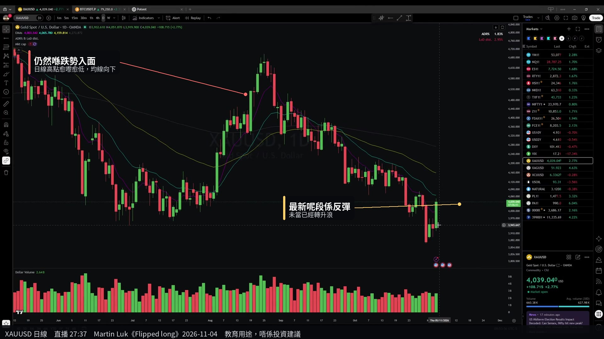
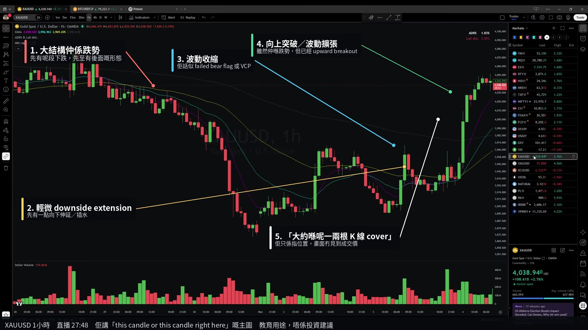
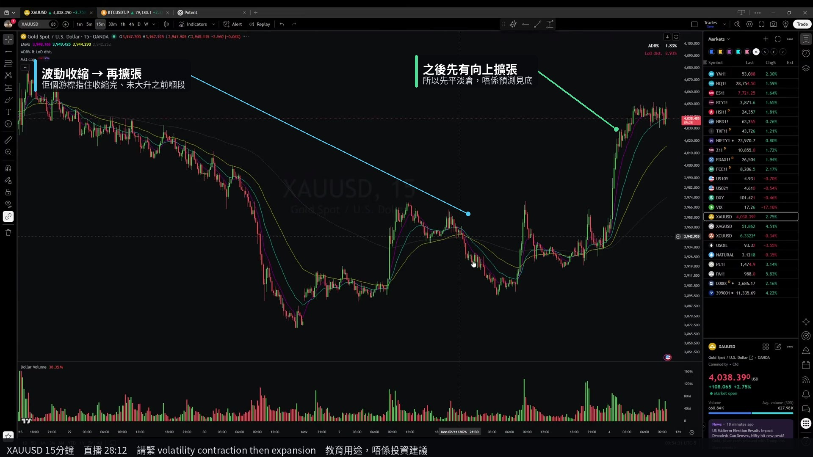
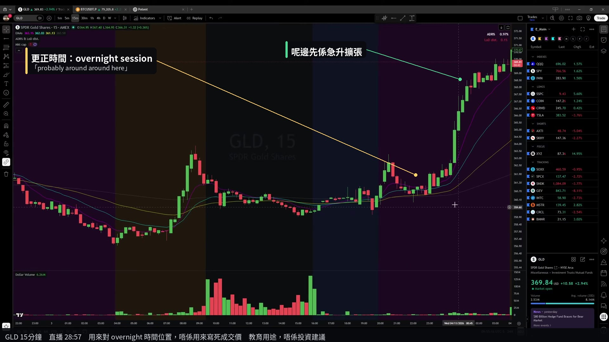

概要
佢唔係預測黃金見底
佢唔係話「黃金見底所以要平」，而係指住圖上嘅位置，用形態同時間解釋點解已經 cover 金銀淡倉。雖然仲叫呢段做跌勢，但已經有向上突破；然後先平淡倉。重點係位置同形態，唔係預測後面一定升。
呢個科目只涵蓋直播《Flipped long》（2026年11月4日）開頭 30 分鐘入面，大約 27:37 至 29:38 呢一段。畫面主要係 XAUUSD，之後先轉 GLD 15 分鐘。白銀雖然有講到，但呢一段冇單獨出示白銀圖。
讀圖次序係：先用日線確認大結構仍然係跌勢；放大到 1 小時圖，指住大概喺邊啲 K 線 cover，並用 failed bear flag／VCP、波動收縮再擴張、同輕微 downside extension 解釋；再喺 15 分鐘圖睇清楚收縮完、未大升之前嗰段；最後用 GLD 15 分鐘更正時間——起初以為係 pre-market，隨即改口話係 overnight session，指住「probably around around here」。
圖上嘅中文註解係之後加上嘅讀圖說明，方便 review；唔係直播畫面原本已有嘅字。可用每幅圖嘅「原畫面」掣，或者上面「全部顯示原畫面」，對返未加字嘅截圖。以下「原話」係英文轉寫原文，再附忠實粵語對譯；「點樣讀」係我哋嘅說明，兩者分開。
圖一
XAUUSD 日線：確認仍然係跌勢
直播 27:37

原話
For gold and silver shorts I covered it at around this candle or this candle right here.
金同銀嘅淡倉，我大概喺呢一根或者呢一根 K 線嗰度 cover 咗。
呢一句喺日線仲喺畫面嗰陣已經開始講；「this candle or this candle right here」主要係放大到 1 小時圖之後先指住具體位置，完整對白見圖二。
點樣讀
呢一步係用日線確認大結構仍然係跌勢：高點愈嚟愈低、均線向下。最新呢段升，係當反彈來讀，未當已經轉升浪。
呢啲結構觀察係讀圖說明，唔係佢喺呢一段逐句講出「lower highs」或者「均線向下」。原話稍後先講 「it's in a downtrend」。呢步係定位置，唔係宣布見底。
圖二 · 主圖
XAUUSD 1 小時：指住位置，用形態解釋點解平
直播 27:48

原話
For gold and silver shorts I I covered it at around this candle or or this candle right here. So it I kind of feels like yeah it looks like a a failed bear flag or like a VCP, but it's um it's in it's in a downtrend but like it's breaking out to the upside. And it's just like that volatility contraction and then the expansion I together with like a little bit extension to the downside, so I just cover them.
金同銀嘅淡倉，我大概喺呢一根或者呢一根 K 線嗰度 cover 咗。感覺上好似一個 failed bear flag，或者好似 VCP，但係佢仲喺跌勢入面，只不過已經向上突破。就係嗰種波動收縮之後再擴張，再加一點向下延伸，所以我就 cover 咗。
點樣讀
佢指住大約呢一兩根 K 線，作為已經 cover 嘅位置。形態聽落似 failed bear flag 或者 VCP。雖然仲喺跌勢，但已經有 upward breakout。解釋係波動收縮之後再擴張，再加一點 downside extension，所以先平。
要抓住嘅係位置同形態，而唔係預測後面一定繼續升。呢 30 分鐘畫面冇見到落單票或者損益，所以唔應該寫死成交價同倉位大細。
圖三
XAUUSD 15 分鐘：收縮完、未大升之前
直播 28:12

原話
And it's just like that volatility contraction and then the expansion.
就係嗰種波動收縮，然後再擴張。
呢幅 15 分鐘圖係用來睇清楚收縮同之後擴張嘅位置，並唔係另開一段新對白。
點樣讀
15 分鐘圖睇得更清楚：游標喺收縮完成、大升之前嘅位置；之後先有急升擴張。
讀呢幅圖時，要分清「佢指住嘅位置」同「之後先出現嘅升浪」，唔好倒果為因，當成預先預測見底。
圖四
GLD 15 分鐘：更正為 overnight session
直播 28:57

原話
I think pre-market or even no I think it during the overnight section.
probably around around here
我以為係 pre-market，或者甚至——唔係，我想係 overnight session 嘅時候。大概喺呢附近。
機器轉寫作 “overnight section”；按語境應為 overnight session。29:28–29:38 仲有一句 “um just a second”，並無補充呢個分析。
點樣讀
佢起初以為係 pre-market，隨即更正係 overnight session，再喺 GLD 15 分鐘指住「probably around around here」。
GLD 有常規交易時段底色，所以呢幅圖係用來對時間，唔係另開一個白銀嘅個案，亦唔應用來寫死成交價。
附註
注意事項
- 呢一段冇單獨出示白銀圖。佢有講 gold and silver shorts，但畫面只見 XAUUSD，之後先轉 GLD。
- 呢 30 分鐘畫面冇見到落單票、成交價、倉位大細或者損益，所以本頁唔寫死呢啲數字。
- 原話來自機器轉寫（faster-whisper，並對照 YouTube 自動字幕），並非逐字人工校對。轉寫本身註明 “overnight section” 按語境應為 overnight session。
- 本頁只拆金銀淡倉呢一段（約 27:37–29:38），冇混入其他系統或者規則。
免責聲明：呢份係教育拆解，方便之後 review 點樣用形態同位置讀圖，唔係投資建議，亦唔好當作買賣指示。